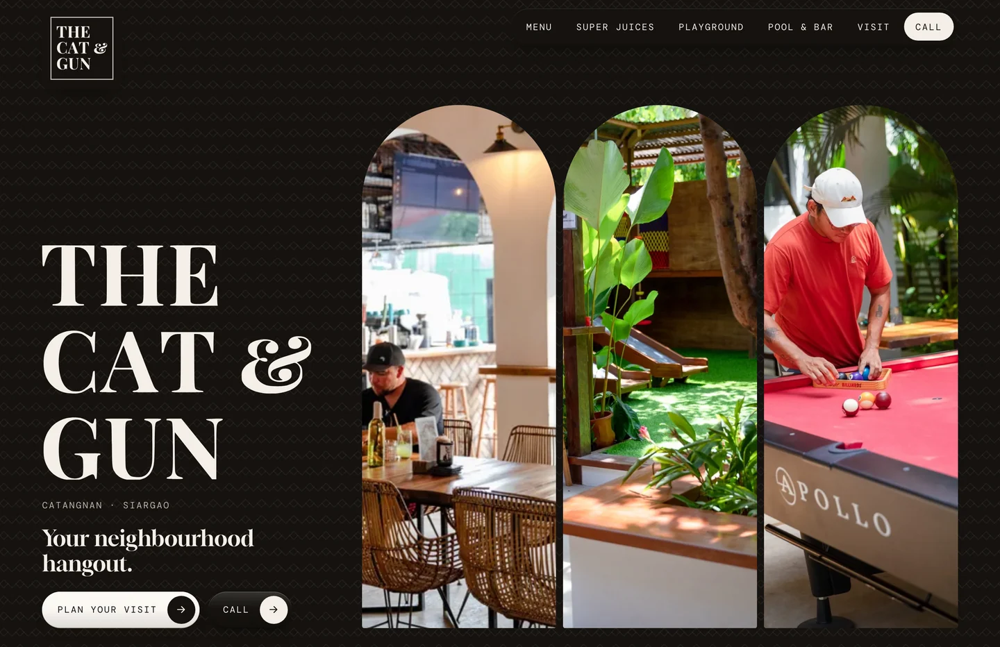
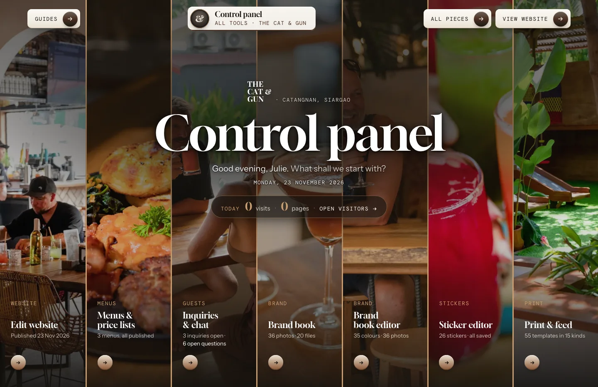
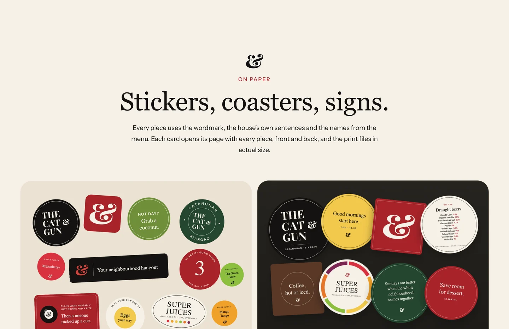
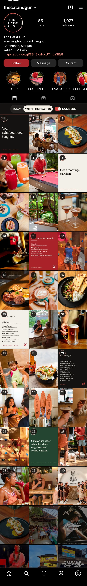
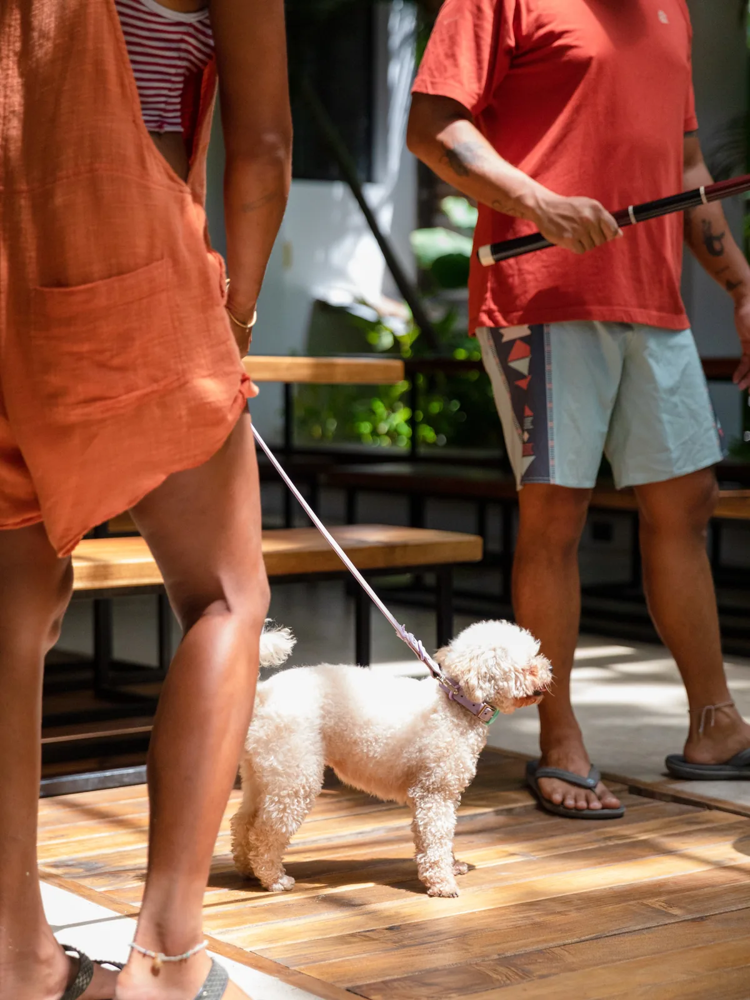

The Academy
11 guide videos and 4 lessons on the website and the tools of The Cat & Gun, in eight rooms. Each room covers one part of the house: the control panel, the website, the menu, guests, the brand, print and Instagram, visits and the basics.
11 videos are ready, the others are being made. Your progress is kept in this browser.
One house, nine tools
Each tool has one job. Together they make what guests see: the website, the printed pieces and Instagram.


Six pages for guests, on the phone and on the computer.

Menus, stickers, coasters, boards and posters.

Posts and stories in the look of the house.
Eight tools and what guests see from each of them.
Choose a room
Each room has its guides, an animation that shows how it works, a recommendation for use and what you know at the end.
 Room 01
Room 01Start here
The control panel and the way every tool saves, checks and publishes.
 Room 02
Room 02The website
Six pages with the photos, sentences and menu of the house, changed in Edit website.
 Room 03
Room 03The menu
One list for drinks, coffee and juices and the kitchen. It makes the printed menu and the Menu page.
 Room 04
Room 04Guests
The chat for the website and the inquiries of guests, answered by you.
 Room 05
Room 05The brand
Colours, fonts, photos and the logo of the house, kept in one place.
 Room 06
Room 06Print & Instagram
Stickers, coasters, boards, posters and Instagram posts from templates.

Room 07Visits
Where guests come from and what they read on the website, without cookies and without names.
 Room 08
Room 08Basics
Four lessons on how the website and the tools work and where everything runs.